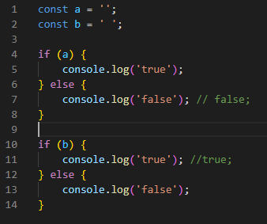

JavaScript — это язык программирования высокого уровня, который является одной из основных технологий Всемирной паутины. Он используется в качестве клиентского языка программирования на 97,8% всех веб-сайтов. Первоначально JavaScript использовался только для разработки веб-браузеров, но теперь он используется для развертывания веб-сайтов на стороне сервера, а также для приложений, не связанных с веб-браузером.
Javascript был создан в 1995 году и первоначально назывался LiveScript. Однако в то время Java был очень популярным языком, поэтому его рекламировали как «младшего брата» Java. Со временем JavaScript стал полностью независимым языком. В настоящее время JavaScript часто путают с Java, и хотя между ними есть некоторое сходство, эти два языка различны.
Javascript является самым популярным языком программирования в мире и пользуется большим спросом у различных организаций. Средний разработчик JavaScript зарабатывает около 112 152 долларов в год.